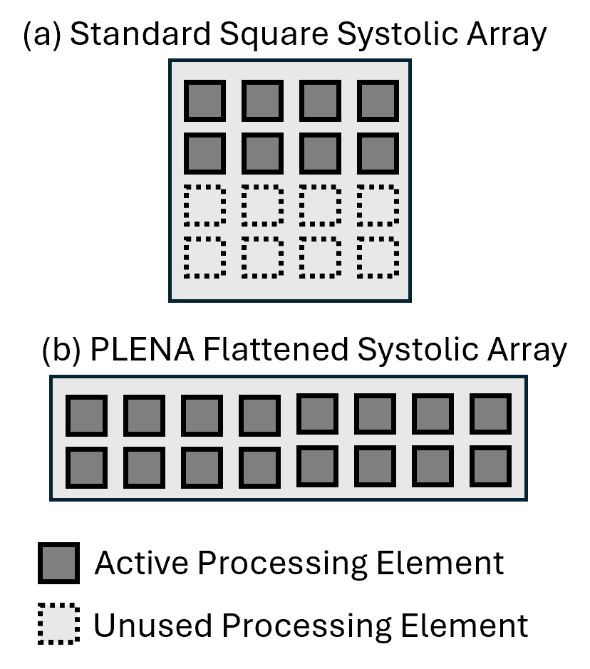
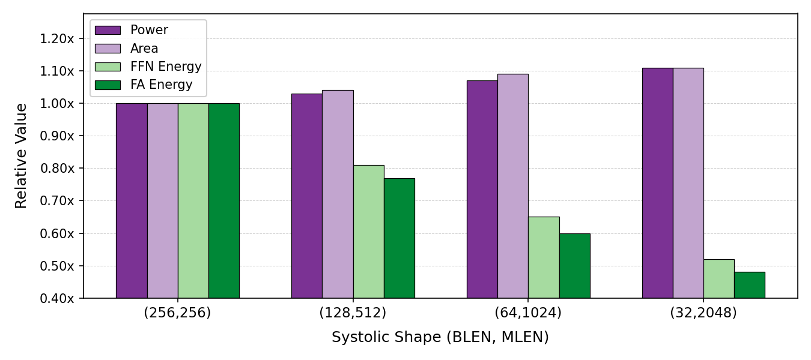

PLENA: Breaking the Memory Walls
for Agentic LLM Inference
1University of Cambridge
2Imperial College London
3University of Edinburgh
LLMs now form the backbone of AI agents for a diverse array of applications, including tool use, command-line interfaces, and web or computer interaction. These agentic LLM inference tasks are fundamentally different from chatbot-focused inference—they often have much larger context lengths to capture complex, prolonged inputs, such as an entire webpage DOM or complicated tool call trajectories. This, in turn, generates significant off-chip memory traffic for hardware at the inference stage and causes the workload to be constrained by the two memory walls, namely the bandwidth and capacity walls, preventing the compute units from achieving high utilization.
We introduce PLENA, a hardware–software co-designed system that applies three core optimization pathways. PLENA features a novel flattened systolic-array architecture (Pathway 1) and efficient compute and memory units that support an asymmetric quantization scheme (Pathway 2). It also provides native support for FlashAttention (Pathway 3). In addition, PLENA is developed with a complete software–hardware stack, including a custom ISA, a compiler, a transaction-level simulator, and an automated design-space exploration flow. Experimental results show that PLENA delivers up to 2.23× and 4.70× higher throughput than the A100 GPU and TPU v6e, respectively, under identical multiplier counts and memory configurations during LLaMA agentic inference. PLENA also achieves up to 4.04× higher energy efficiency than A100 GPU.
A complete, integrated system from model compilation down to RTL, enabling end-to-end co-design.

47-instruction architecture with native MX data type support, hardware loops, and tile-level scheduling for transformer workloads.
Lightweight PyTorch-to-assembly compiler with pre-built templates for attention, FFN, normalization, and FlashAttention kernels.
Rust-based transactional emulator (200x faster than RTL, <5% error) with Ramulator 2 integration and Python analytical models.
PTQ framework supporting MXINT/MXFP formats with asymmetric precision and selective Hadamard rotation.
Flattened 4x1024 systolic array with dedicated Matrix, Vector, and Scalar units, on-chip SRAM hierarchy, and HBM controller.
Multi-objective Bayesian optimization across accuracy, latency, and area, connecting quantization choices with hardware parameters.

Agentic LLM workloads produce "fat" GEMMs where the batch dimension is much smaller than the hidden dimension. Traditional square systolic arrays waste processing elements on these shapes. PLENA's flattened array maximizes utilization by matching the natural shape of these workloads.

PLENA hardware architecture. The design features a flattened systolic array in the Matrix Unit, dedicated Vector and Scalar Units, on-chip SRAM hierarchy, and an HBM controller with built-in quantizer/dequantizer for asymmetric precision support.

Flattening the systolic array reduces energy consumption for both FFN and FlashAttention kernels by up to 52%, with only modest increases in power and area. This motivates PLENA's (32, 2048) / (64, 1024) design point.
Under identical multiplier counts and memory configurations during LLaMA agentic inference workloads, PLENA demonstrates significant improvements across throughput and energy efficiency.
All systems modeled with equivalent HBM settings. PLENA uses a 16-accelerator configuration; baselines are 4× A100 80GB, 4× H100 80GB, and 16× TPU v6e.
| Model | Workload | A100 | H100 | TPU v6e | PLENA |
|---|---|---|---|---|---|
| LLaMA-3.1-8B | GSM8K (1.4k/0.2k) | 1.00× | 2.48× | 0.88× | 1.91× |
| Long-context | 1.00× | 2.34× | 0.46× | 1.45× | |
| LLaMA-3.3-70B | BFCL (114k/5k) | 1.00× | 2.04× | 0.46× | 2.23× |
| OSWorld (90k/8k) | 1.00× | 2.34× | 0.85× | 2.21× |
Throughput relative to A100 GPU. Workload format: prefill tokens / output tokens.
@misc{wu2025combatingmemorywallsoptimization,
title={Combating the Memory Walls: Optimization Pathways for Long-Context Agentic LLM Inference},
author={Haoran Wu and Can Xiao and Jiayi Nie and Xuan Guo and Binglei Lou and Jeffrey T. H. Wong and Zhiwen Mo and Cheng Zhang and Przemyslaw Forys and Wayne Luk and Hongxiang Fan and Jianyi Cheng and Timothy M. Jones and Rika Antonova and Robert Mullins and Aaron Zhao},
year={2025},
eprint={2509.09505},
archivePrefix={arXiv},
primaryClass={cs.AR},
url={https://arxiv.org/abs/2509.09505},
}